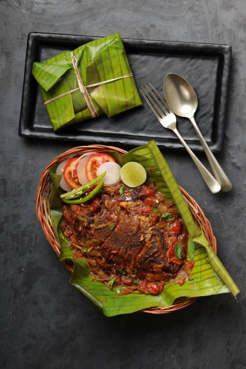
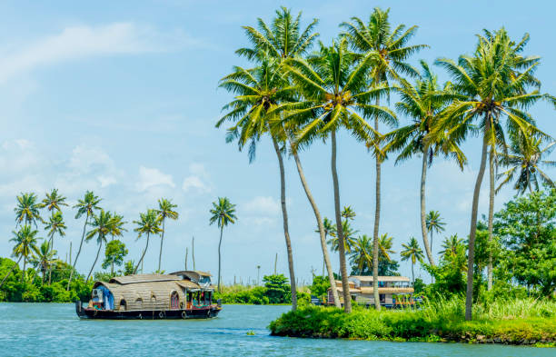
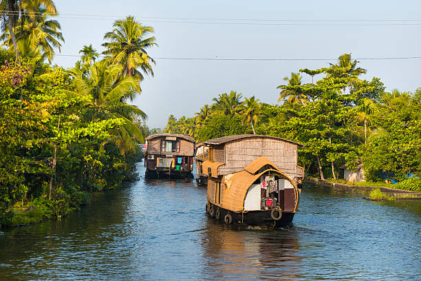
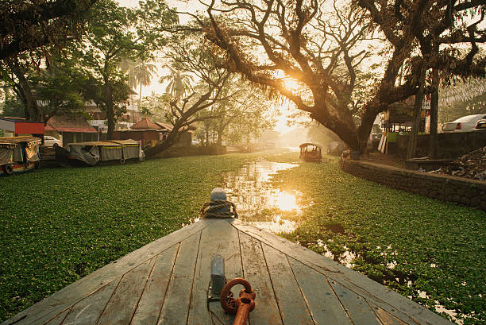
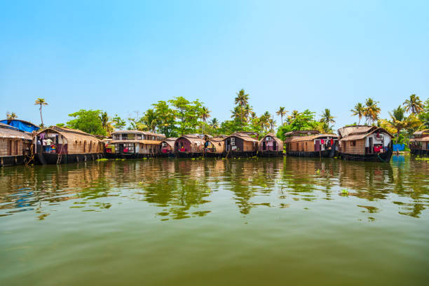
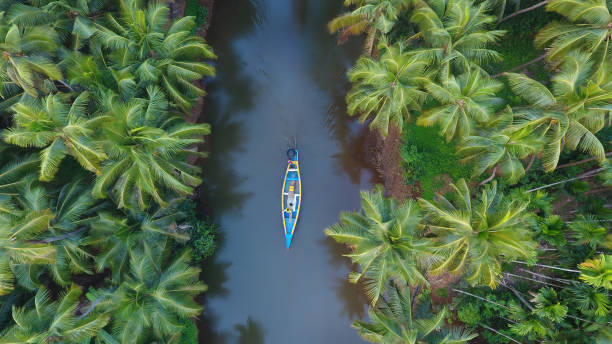
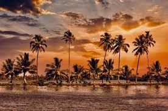

Alleppey  Map
Map
Alleppey, also known as Alappuzha, is a town in Kerala, India. It's located 62 kilometers south of Kochi and 155 kilometers north of Trivandrum.

Alleppey is known for its:
- Canals, backwaters, beaches, and lagoons
- Boat races, houseboats, coir products, fish, and lakes
- Backwater boat trips
- Spices, carpets, coir, rare handicrafts, and traditional jewelry
Alleppey is one of the oldest planned towns in India. It was nicknamed the "Venice of the East" by Lord Curzon, the Viceroy of India at the beginning of the 20th century. Alleppey is also one of the busiest port towns on the western coastline. It has a port and a pier, criss-cross roads, and many bridges.
     